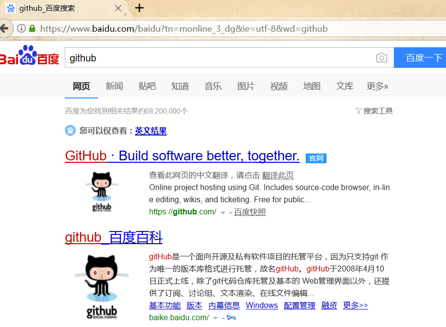
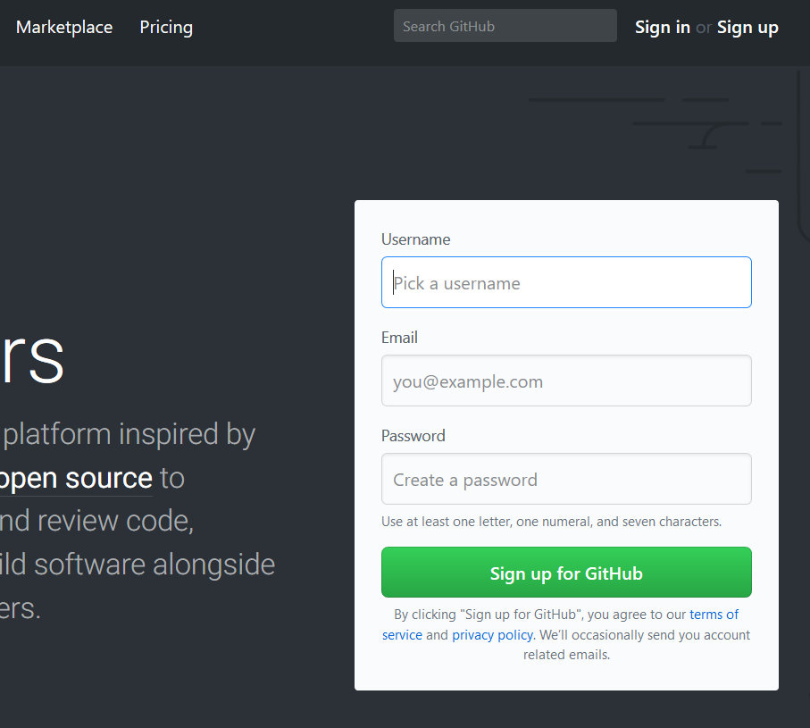
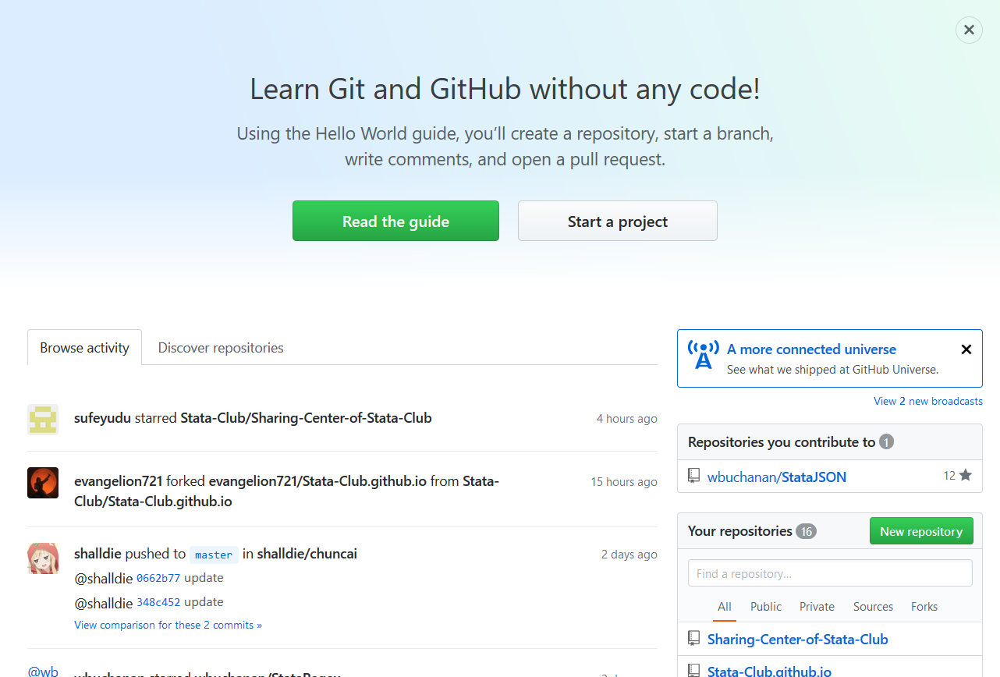
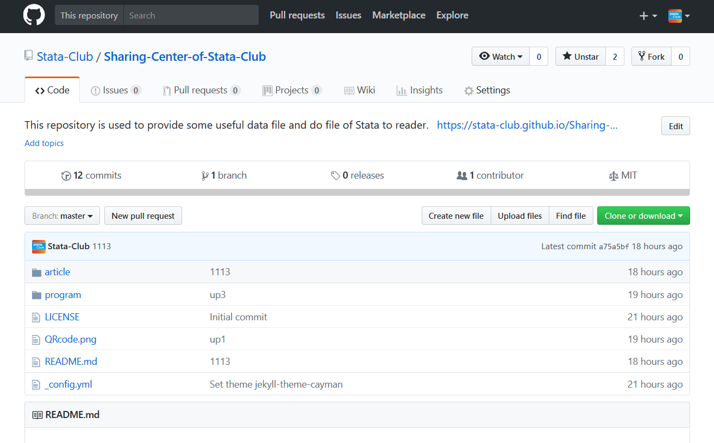
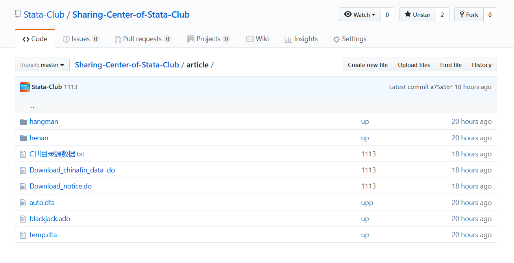
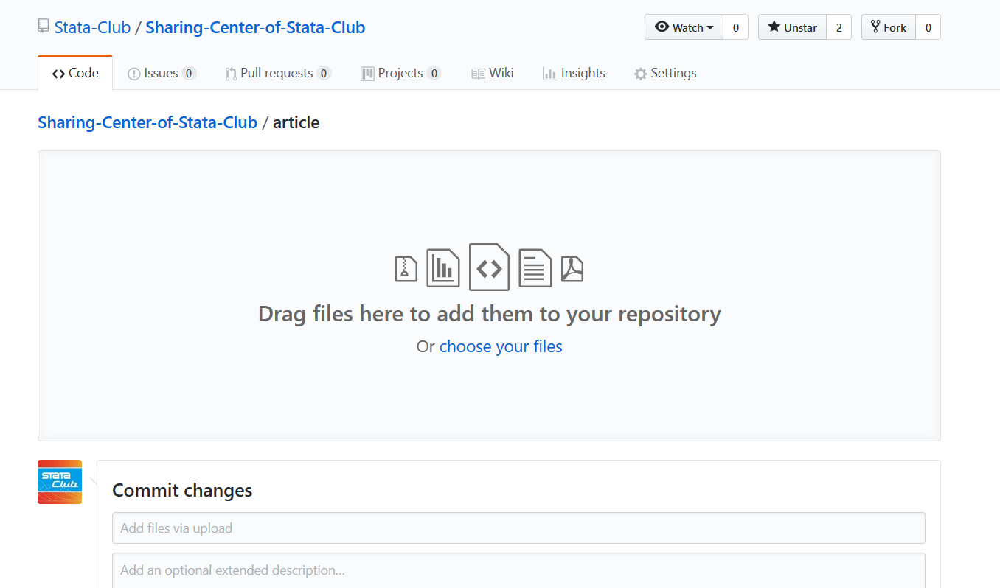
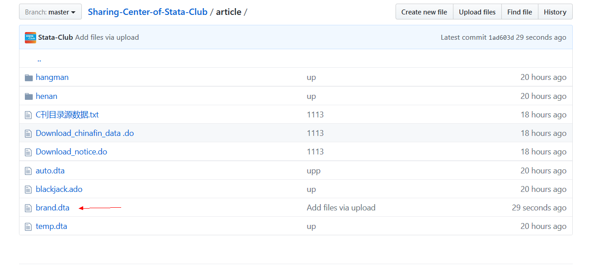
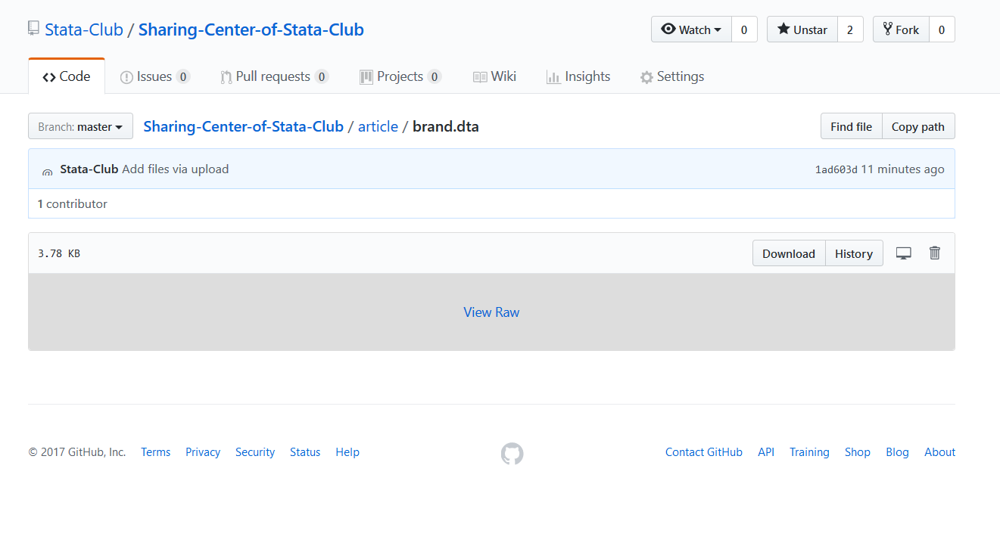

网站的主要结构已经完成，现在教大家如何将推文中所用到的数据或文件上传云端，以便读者copy下载。非常地简单，多图预警。
在百度中搜索GitHub进入官网

点击右上角的Sign in登陆爬虫俱乐部官方账号

点击右下角的 Sharing-Center-of-Stata-Club 仓库
该仓库用于统一存放我们的数据

点击仓库的 article 文件夹

点击右上角的 Upload files 在该文件夹下上传文件


上传文件完成后，点击左下角的 commit changes 提交，我这次提交的是brand.dta文件

我们可以看到，文件已经上传到文件夹中了。


下载链接
通过这个方式上传文件完毕后，下载链接为
https://raw.githubusercontent.com/Stata-Club/Sharing-Center-of-Stata-Club/master/article/ + 你的文件名
如果上传的是dta文件，则可以在Stata使用 use "http:..." 使用，如果上传的是do文件，则可以使用copy "http:..." 获得